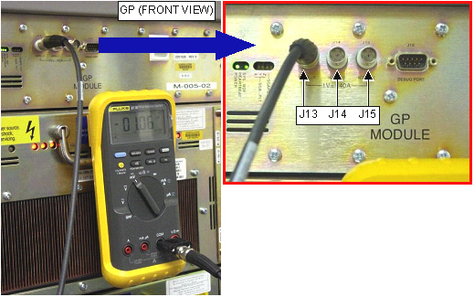

Monitoring DC Offsets for the XFD
Prerequisites
Procedure
- DESCRIPTION
Offset adjustments for XFD is automated using Digital DC Offset; however, some FEs continue to use the DVM approach that worked on XFA: measuring at the XFA output with a Digital Volt Meter (DVM). DVMs will give an inaccurate reading of offset voltage with the switching waveforms on the output of the XFA sometimes as high as 30Vdc when the actual offset is < 10mV.
A procedure for monitoring DC offsets has been developed for the XFD. This procedure is for troubleshooting only and is to be used to monitor DC Offsets. If Offsets are suspect for causing system malfunction, contact the OLC to get engineering support.
- MONITORING DC OFFSETS
- With the XFD cabinet powered on and in a disabled state, use
a DVM (in the mV scale) to measure J13, J14, and J15 (X, Y, and Z
axis respectively) on the front panel of the GP, see Figure 1 Multiply these voltages by 40 to obtain reference currents, in
mA, for each axis. Record measurement in Table 3
Figure 1. MEASUREMENT LOCATIONS ON THE GP

- With the XFD powered on and enabled, use a DVM to measure again
J13, J14, and J15. Multiply these voltages by 40 to obtain currents,
and compare them to the "reference" currents measured in Step 2.a.note:
To enable XFD, prescribe any scan until the Save Scan button is active. Do not start the scan. Gradshim values need to be set to Zero. The FE should wait 5 minutes after scanning or pre-scanning to measure offsets because the very-long-time-constant eddy currents will look like a DC offsets until they have settled.
- The *difference* between the reference current and the enabled
current is the offset, refer to Table 3 to determine offset value. For example:
-
XFD Disabled, measure J13 to be 3 mV * 40 = 120 mA.
-
XFD Enabled, measure J13 to be 2.8 mV * 40 = 112 mA.
-
DC Offset is 112 mA - 120 mA = 8 mA.
-
- If it is necessary to adjust the offsets, use the Digital DC
Offset diagnostic. DO NOT ADJUST THE POTENTIOMETERS ON THE XFAs (these
are used ONLY for factory calibration). If the potentiometers are
adjusted the module may change the tuning to a range that the DC Offsets
would not be able to bring to zero, thus causing a hard failure.
- With the XFD cabinet powered on and in a disabled state, use
a DVM (in the mV scale) to measure J13, J14, and J15 (X, Y, and Z
axis respectively) on the front panel of the GP, see Figure 1 Multiply these voltages by 40 to obtain reference currents, in
mA, for each axis. Record measurement in Table 3
If unsure whether the XFD is in a disabled state, wait 15 minutes without scanning and it will disable. Another way to disable the XFD is to power cycle the GP. If the XFA is enabled, a large group of LEDs on the XFA Control board will be lit. When the XFD is disabled, only a few LEDs will be lit on each of the XFAs.
Finalization
No finalization steps.